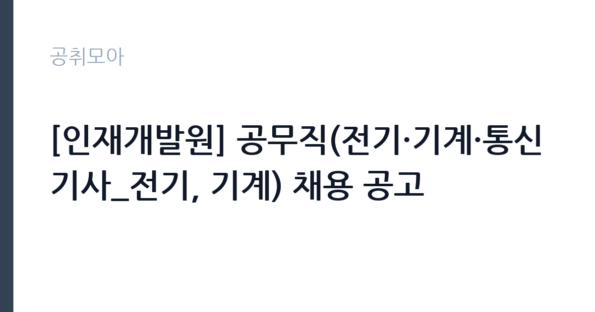

[공공기관] [인재개발원] 공무직(전기·기계·통신기사_전기, 기계) 채용 공고
근로복지공단 · 충북 · 마감 2026-10-26 (D-7) · 출처 잡알리오

한눈에 보는 모집 조건
| 기관 | 근로복지공단 |
|---|---|
| 공고명 | [인재개발원] 공무직(전기·기계·통신기사_전기, 기계) 채용 공고 |
| 고용형태 | 공무직 |
| 근무지 | 충북 |
| 게시일 | 2026-10-19 |
| 마감일 | 2026-10-26 (D-7) |
지원자격, 이렇게 읽으세요
- 공공기관 채용공시
- 세부 조건은 원문 공고문 확인
응시자격은 분야별로 제시돼 있습니다. 공통 요건은 임용예정일 기준 정년 미도과자, 즉 만 60세 미만인 사람입니다. 국가공무원법 제33조와 공단 인사규정 제14조에 저촉되지 않아야 하고, 병역법상 병역의무 불이행 사실이 없어야 합니다. 현재 군복무 중이라면 임용예정일 이전 전역이 가능해야 합니다. 임용예정일 즉시 근무가 가능해야 하고 대한민국 국적을 보유해야 합니다. 분야별 필수 요건은 자격증입니다. 전기 분야는 전기기능사, 전기산업기사, 전기공사산업기사, 전기기사, 전기공사기사 중 하나 이상이 필요합니다. 기계 분야도 같은 방식으로 기계 관련 자격을 요구합니다. 기능사부터 인정되므로 자격 등급이 낮다고 지원이 막히지는 않습니다.
이 공고의 포인트
이 공고의 핵심은 공무직이라는 신분입니다. 근로복지공단의 공무직은 기간의 정함이 없는 무기계약으로, 정년까지 근무가 가능합니다. 두 번째는 업무의 성격입니다. 인재개발원은 공단 직원 교육과 연수를 담당하는 시설로, 전기와 기계 설비의 안정적 운영이 핵심입니다. 세 번째는 자격 요건의 폭입니다. 기능사만 있어도 지원할 수 있어, 관련 경력은 있지만 학력이 높지 않은 지원자에게 문이 열려 있습니다. 충북 근무라는 점도 경쟁률 측면에서 유리하게 작용할 수 있습니다.
전형은 어떻게 진행되나
전형은 서류전형과 면접전형으로 진행됩니다. 서류에서는 자격증과 응시자격 충족 여부를 확인하고, 면접에서는 설비 운영과 유지보수 실무 능력을 봅니다. 공무직 채용은 현업 직무이므로 실무 질문의 비중이 큽니다. 최종합격 후에는 신원조회와 채용 신체검사가 이어지고, 결격사유가 없으면 임용됩니다. 접수는 공단 채용 사이트에서 온라인으로 이뤄집니다. 마감일이 10월 26일로 촉박하므로, 자격증 사본과 경력증명서를 즉시 준비하십시오. 서류 제출 후에는 접수 확인증을 출력해 보관하는 것이 안전합니다.
원문에서 확인한 전형 방식
[전기·기계·통신기사_전기] 0 임용예정일 기준 공단 「공무직 및 기간제근로자의 인사복무 등 운영세칙」에 따른 정년 미도과자(60세 미만) 0 「국가공무원법」 제33조 및 공단 「인사규정」 제14조 규정에 저촉되지 않는 자 0 병역법 제76조에서 정한 병역의무 불이행 사실이 없는 자 - 현재 군복무 중인 경우 임용예정일 이전 전역이 가능한 자 0 임용예정일 즉시 근무가 가능한 자 - 임용일은 공단 사정에 따라 변경될 수 있음 0 대한민국 국적을 보유한 자 0 「국가기술자격법」에 따른 아래 분야 자격 1개 이상 소지자 - (기능사) 전기기능사 - (산업기사) 전기산업기사, 전기공사산업기사 - (기사 이상) 전기기사, 전기공사기사 [전기·기계·통신기사_기계] 0 임용예정일 기준 공단 「공무직 및 기간제근로자의 인사복무 등 운영세칙」에 따른 정년 미도과자(60세 미만) 0 「국가공무원법」 제33조 및 공단 「인사규정」 제14조 규정에 저촉되지 않는 자 0 병역법 제76조에서 정한 병역의무 불이행 사실이 없는 자 - 현재 군복무 중인 경우 임용예정일 이전 전역이 가능한 자 0 임용예정일 즉시 근무가 가능한 자 - 임용
이런 분께 추천해요
- 전기 또는 기계 국가기술자격을 가진 분 — 기능사부터 인정됩니다
- 충북 인재개발원 근무가 가능한 분 — 근무지가 충북으로 명시돼 있습니다
- 무기계약 공무직으로 시설 관리 경력을 이어가고 싶은 분
지원 전 체크리스트
- 전기 또는 기계 분야 자격증을 1개 이상 보유했는가
- 임용예정일 기준 만 60세 미만인가 — 정년 미도과 요건입니다
- 병역의무 불이행 사실이 없는가 — 군복무 중이라면 전역 시점을 확인하십시오
- 마감일 2026-10-26 이전에 접수를 완료했는가 — 준비 기간이 짧습니다
모집 일정과 제출 타이밍
마감은 2026년 10월 26일입니다. 공고가 10월 19일에 올라왔으므로 준비 기간이 일주일입니다. 순서를 정해 움직이십시오. 첫날 자격증과 경력증명서를 준비하고, 둘째 날 지원서를 작성하십시오. 마감 사흘 전에는 제출을 마쳐야 합니다. 면접은 서류 합격자에게 개별 통보되며, 현업 직무 특성상 설비 관련 실무 질문이 나옵니다. 인재개발원의 시설 구성과 주요 설비를 미리 파악해 두면 답변이 구체적으로 나옵니다.
직무 이해하기: 공공기관
근로복지공단은 산재보험과 근로복지 사업을 수행하는 준정부기관입니다. 인재개발원은 공단 직원의 교육과 연수를 담당하는 시설로, 숙소와 강의동, 부대시설을 운영합니다. 전기·기계·통신기사는 이 시설의 설비를 유지 관리합니다. 구체적으로는 수변전 설비와 배전반 점검, 발전기와 비상전원 관리, 냉난방과 급배수 설비 운전, 승강기와 소방 설비 협력 관리, 통신 설비 점검 등이 핵심 업무입니다. 교육 시설 특성상 행사와 교육 일정에 맞춰 설비를 준비해야 하고, 고장 발생 시 즉시 복구해야 합니다. 점검 일지와 유지보수 이력 관리도 중요한 업무입니다.
자기소개서 작성 팁
기술직 지원서는 자격과 경험을 구체적으로 쓰는 것이 기본입니다. 첫 문단에 보유 자격증과 실무 경력을 한 문장으로 제시하십시오. 본론에서는 담당했던 설비의 종류와 규모를 숫자로 적으십시오. 예를 들어 수변전 설비 용량, 관리한 건물의 연면적, 냉난방기 대수, 연간 유지보수 건수 같은 항목입니다. 고장 대응 사례도 좋은 소재입니다. 어떤 이상이 발생했고, 어떻게 원인을 찾아 조치했는지를 순서대로 쓰면 실무 능력이 드러납니다. 마무리에는 교육 시설의 안정적 운영에 기여하겠다는 의사를 밝히십시오. 자격증만 나열하고 경험을 쓰지 않으면 현장 감각이 없다는 인상을 줍니다.
면접 준비 포인트
면접은 실무 질문이 중심입니다. 정전이 발생했을 때의 조치 순서, 냉동기 고장의 원인 진단 방법, 안전사고 예방을 위한 점검 항목 같은 질문이 나옵니다. 답할 때는 안전을 최우선에 두고 보고 체계를 함께 설명하십시오. 예를 들어 이상 발견 즉시 설비 정지, 관리자 보고, 원인 확인, 복구, 기록 순으로 답하면 됩니다. 공단은 산재 예방을 업으로 하는 기관이므로 안전 의식을 특히 중요하게 봅니다. 산업안전보건법상 기본 의무를 언급할 수 있으면 좋은 인상을 줍니다.
급여·근무조건 읽는 법
보수는 공단의 공무직 보수 규정에 따라 정해지며, 원문 공고문의 처우 항목에서 확인해야 합니다. 이번 공고에서는 금액이 공개되지 않았으므로 구체적인 수치는 원문을 기준으로 하십시오. 공무직은 기간의 정함이 없는 무기계약으로, 4대 보험과 퇴직급여가 적용되고 정년까지 근무가 가능합니다. 자격 등급과 경력에 따라 초임이 달라지므로, 기능사와 기사 간 처우 차이가 있는지도 확인할 항목입니다. 기본급 외에 위험수당이나 자격수당, 교대 근무수당이 붙는 경우가 있습니다. 공공기관 경영공시인 알리오에서 공단의 보수 규정과 평균 보수를 확인할 수 있습니다.
자주 묻는 질문
- 기능사만 있어도 지원할 수 있나요?
네. 전기기능사 또는 기계 관련 기능사 이상이면 자격 요건을 충족합니다. 산업기사와 기사도 당연히 인정됩니다. - 공무직은 정규직인가요?
기간의 정함이 없는 무기계약 신분입니다. 계약 기간이 정해지지 않아 정년까지 근무가 가능합니다. - 근무지는 어디인가요?
충북에 있는 근로복지공단 인재개발원입니다. 정확한 주소와 출퇴근 조건은 원문 공고문에서 확인하십시오.
함께 보면 좋은 공고
[공공기관] 2026년 하반기 중소벤처기업진흥공단 체험형 청년인턴(일반) 채용 공고 — 마감 2026-11-03[공공기관] 2026년 제3차 동남권원자력의학원 직원채용 공고 — 마감 2026-11-02[공공기관] 2026년 한국잡월드 정규직 신입(5급) 직원 채용 공고 — 마감 2026-11-04출처: 잡알리오 공개정보를 바탕으로 공취모아가 정리한 안내글입니다. 모집 조건·일정은 변경될 수 있으니 지원 전 반드시 원문 공고문을 확인하세요. 본 글은 정보 제공용이며 합격을 보장하지 않습니다.